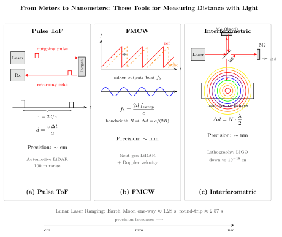

激光雷达怎么测毫米级的距离?
上一节我们讨论了波分复用如何把一根光纤劈成几十条频道同时传输信息. 那里的核心是频率, 而本节的主角是时间与空间: 我们不再问"光能承载多少信息", 而是问"光能告诉我们多准的位置".
当自动驾驶汽车在夜里判断前方障碍物的距离, 当半导体光刻机把晶圆台的位置锁定在几个纳米内, 当 LIGO 感知到十亿光年外两个黑洞合并留下的十的负二十一次方应变, 它们用的都是同一件东西 —— 光. 但"用光测距"在不同量级下有完全不同的策略. 15 厘米与 1 纳米之间跨越了八个数量级, 不可能用同一个把戏完成. 我们这一节就把这三种把戏并列摆开, 看清它们各自的原理与极限.
所有方案的共同出发点都是爱因斯坦在 1905 年确立的那条铁律: 真空中的光速是一个普适常数 $c = 2.998 \times 10^8$ m/s. 这个常数不仅是电磁学的, 也是时空几何的. 一旦我们能精确地测量光走了多远的时间, 也就精确地知道了它走过的距离. 所有雷达、LIDAR、干涉仪, 归根结底都是这条定律的工程化身.
一、脉冲 ToF: 最朴素的"发一下, 等一下"
最直观的方案叫做飞行时间法 (Time of Flight, ToF). 激光器发出一个短脉冲, 脉冲被目标反射后回到接收器, 我们测量这段来回时间 $\Delta t$, 则距离就是光速乘以时间再除以二:
$$ d = \frac{c \, \Delta t}{2} \tag{1} $$
除以 2, 是因为这段时间包括了去程和回程两段. 公式极其简单, 但它隐含的工程要求极其苛刻. 让我们代入数字看一看: 如果想达到 15 厘米的距离分辨率, 需要的时间分辨率是 $\Delta t = 2 \times 0.15 / c \approx 1$ ns. 纳秒级的时间测量对于现代电子学不算稀奇 —— 示波器触发、FPGA 计数器、雪崩二极管都能做到. 但如果把目标推到毫米级, 时间分辨率就得到皮秒量级, 这意味着接收端的探测器响应、比较器阈值、电缆延迟稳定性都必须被严格控制, 工程难度陡然上升.
车载 LIDAR 属于 ToF 路线的典型产物. 现代固态 LIDAR 通常工作在 1550 nm 波段 (对人眼安全, 且可以合法地使用更高功率), 峰值功率可达 100 W, 脉冲宽度大约 5 ns, 重复频率在几十到几百千赫兹. 这样的系统典型的作用距离是 100 米, 距离精度在 1 至 2 厘米左右. 让我们估算一下来回时间: 对 100 米目标, $\Delta t = 2 \times 100 / c \approx 667$ ns. 这几百纳秒要求系统时基稳定到千分之一以内才能保证厘米精度. 相比之下, 5 米近处的障碍物回波仅用 33 ns 返回, 此时脉冲本身的 5 ns 宽度已经不可忽略, 需要用脉冲重心或相位拟合才能把精度榨到厘米级.
ToF 法的两大先天短板是: 一、要打出强脉冲才能在日光和杂散光中被识别, 这意味着高功率器件和安全法规的博弈; 二、单次测量依赖一两个高时间分辨的采样点, 对时基抖动极其敏感. 好在这两点都能通过"多次平均"缓解 —— 如果我们把 1000 个脉冲的回波累加起来, 信噪比大约提高 $\sqrt{1000} \approx 32$ 倍. 这就引出了一个根本的物理极限, 我们留到第四节再看.
二、FMCW: 把频率写进时间里
纯脉冲测距有一个绕不开的困境: 要又强又短. 短脉冲意味着高峰值功率, 容易饱和器件, 也对电磁兼容和人眼安全不友好. 有没有办法用温和的连续波也得到同样甚至更好的精度? 答案是有, 这就是调频连续波法 (Frequency-Modulated Continuous Wave, FMCW).
FMCW 的关键思路是: 让激光的频率随时间线性扫动 —— 比如 10 微秒内从 $f_0$ 线性升到 $f_0 + B$, 这里 $B$ 称为扫频带宽. 这束扫频激光一部分直接送入本地振荡器 (作为参考), 另一部分发出去、打到目标、反射回来. 由于光速有限, 回波对应的瞬时频率相比本地参考滞后了 $\tau = 2d/c$ 这么一段时间, 而在扫频过程中, 滞后时间直接翻译成频率差. 两束光在光电探测器上混频, 就得到一个拍频:
$$ f_b = \frac{2 \, d}{c} \cdot \frac{dB}{dT} = \frac{2 \, d \, f_{\text{sweep}}}{c} \tag{2} $$
其中 $f_{\text{sweep}} = B/T$ 是扫频斜率. 测距问题被巧妙地转化为频率测量问题: 数出拍频是多少赫兹, 就能反推距离. 频率测量的优势在于, 它本质上是把长时间的相位差累积起来, 天然地做了"积分式"的降噪, 对短时噪声不敏感.
FMCW 的距离分辨率由扫频总带宽决定. 如果扫频带宽是 $B$, 那么可分辨的距离大约是 $\Delta d = c / (2B)$. 代入数字: 1 GHz 扫频对应 15 厘米分辨率; 如果把扫频拉到 40 GHz (激光器上实现这一点是当代 FMCW LIDAR 的工程热点), 分辨率就能达到 $c/(2 \times 4 \times 10^{10}) \approx 3.75$ 毫米, 即毫米量级. FMCW 还有一个脉冲 ToF 无可比拟的好处: 它在探测端只需要滤一个很窄的拍频带, 所以对宽带环境光几乎免疫 —— 太阳光里几乎没有单一频率能精确落在你临时生成的那个拍频上, 这让 FMCW LIDAR 在阳光下的信噪比远优于纯脉冲方案. 此外, 因为拍频是连续相位的差异, FMCW 还能同时测出目标的径向速度 (多普勒项), 做到"一测得两".
当然, FMCW 的代价是对激光线宽和扫频线性度的苛求: 扫频只要不是完美的线性函数, 拍频就会被抹宽, 分辨率立刻退化; 激光线宽若大于期望分辨率对应的频差, 拍频也无法清晰呈现. 这催生了光频梳辅助的扫频稳定技术, 用一把"频率尺子"去锁定扫频激光的瞬时频率, 把非线性压到万分之一甚至更低.

三、干涉测距: 用光波长本身当尺子
FMCW 把时间差变成频率差, 但它利用的仍是"光脉冲走了多远"的宏观运动信息. 如果我们愿意放弃一部分测量范围, 转而追求极致的精度, 那么可以走一条截然不同的路: 直接用光波长作为刻度. 这就是干涉测距.
迈克尔逊干涉仪是这条路线的典范. 一束相干激光被分束器分成两半, 一半送入参考臂 (长度固定), 一半送入测量臂 (长度随目标移动而变化). 两束光再次会合, 因为它们走过的光程不同, 会产生相位差, 在输出端形成明暗交替的条纹. 每当测量臂相对参考臂移动了半个波长 $\lambda/2$, 输出就完整地从明到暗再到明走过一个周期. 我们数出条纹数 $N$, 就得到距离变化:
$$ \Delta d = N \cdot \frac{\lambda}{2} \tag{3} $$
对于 $\lambda = 633$ nm 的氦氖激光, 一个条纹对应 316 nm 的位移, 而条纹内部的相位可以被光电探测器拟合到百分之一甚至千分之一, 于是精度立刻进入纳米乃至亚纳米量级. 这就是为什么半导体光刻机、超精密机床、原子力显微镜几乎无一例外地使用干涉式位移传感器 —— 没有任何其他测距技术能在同样的成本下达到这种精度.
干涉法的局限同样来自它的原理: 公式里出现的是条纹数 $N$, 而 $N$ 只有在连续跟踪测量臂运动的条件下才能被正确累加. 一旦中途停电或者光束被挡, 我们就不知道到底跳过了多少个 $\lambda/2$, 发生"条纹数模糊 (fringe ambiguity)". 解决方案有两种: 一是多波长干涉, 用两个或多个波长的公共周期定义一个大得多的"合成波长", 使模糊范围扩大到米级; 二是白光或啁啾干涉, 利用宽谱光只在零光程差处形成清晰条纹的特点, 给出绝对距离. LIGO 引力波探测器的 4 公里长干涉臂就是用这些技巧, 把测距精度推到了 $10^{-18}$ 米的惊人水平, 远远小于原子核半径 —— 这已经不是测量, 而是对时空几何的直接聆听.
四、从车灯到月球: 数字、极限与 1969 年的角反射器
把三种方案都走过一遍以后, 我们做两次真实的数字估算, 然后看一个把它们推到极端的历史案例.
第一个估算落在车载 LIDAR 上. 假设我们要让一辆城市自动驾驶车在 100 米开外识别一辆静止的汽车. 采用 1550 nm、100 W 峰值、5 ns 脉冲的固态 LIDAR. 脉冲能量 $E = P \times \tau \approx 100 \times 5 \times 10^{-9} = 500$ nJ. 单个脉冲含光子数 $N_\gamma = E / (hc/\lambda) \approx 500 \times 10^{-9} / (1.28 \times 10^{-19}) \approx 4 \times 10^{12}$ 个. 大部分光打到目标上是漫反射, 目标把光散射回 $2\pi$ 立体角内, 从 100 米远的接收孔径 (比如 5 cm 直径) 看回来的立体角约 $\pi \times 0.025^2 / 100^2 \approx 2 \times 10^{-7}$ sr, 于是回到接收器的光子数降到 $\sim 10^5$ 量级 (再乘以目标反射率 $\sim 0.1$). 每个脉冲回来几万到几十万光子, 配合雪崩二极管就足以打出一个漂亮的回波, 重心拟合到 1 厘米精度完全可行. 这与实际车载 LIDAR 标称的 1-2 厘米精度一致.
第二个估算更具挑战: 从地球向月球上的角反射器打激光, 精确测出地月距离. Apollo 11 (1969)、Apollo 14 (1971)、Apollo 15 (1971) 宇航员在月面安放了角锥棱镜反射阵列, 加上苏联 Lunokhod 1 (1970)、Lunokhod 2 (1973) 月球车运回去的反射器, 人类在月面留下了五个"永久的镜子". 现代月球激光测距 (Lunar Laser Ranging, LLR) 使用 532 nm 的倍频 Nd:YAG 激光, 脉冲宽度 100 ps, 单脉冲能量约 1 J, 通过 3 米口径望远镜发出. 来回时间约 $2 \times 3.84 \times 10^8 / c \approx 2.57$ s, 这其中地球与月球之间相对运动本身就带来几千公里级别的"地月距离变化", 纯几何部分还要加上大气、潮汐、广义相对论修正.
但发出一焦耳光, 从 38 万公里外的一片角反射器 (阵列有效面积不过几平方米) 返回地球能有多少光子? 我们粗算一下: 激光在大气中发散加上光束固有发散, 到达月面时光斑直径大约几公里, 功率密度稀释到原来的 $\sim 10^{-13}$; 反射器把回程光束聚焦回一个几十公里直径的光斑打回地球, 又是 $\sim 10^{-9}$ 的稀释. 两头相乘并考虑大气透过率与接收望远镜面积, 每个脉冲返回的光子只有 10 到 100 个量级 —— 几乎到了单光子极限. 这就引出了所有光学测距共同的物理极限: 散粒噪声 (shot noise). 光子数是离散的, 方差正比于平均数, 信噪比 $\text{SNR} \sim \sqrt{N_\gamma}$. 想把 LLR 的精度从厘米提升到毫米, 就得把有效回传光子从 100 个堆到 $10^4$ 个, 这要么靠更大口径的望远镜, 要么靠更长时间的累积, 要么靠更聪明的脉冲波形. 此外大气湍流会让激光在穿越对流层时产生随机偏折, 给回程时间带来几十皮秒量级的抖动, 这是地基 LLR 目前难以再突破的软天花板.
极限检验的意义在于: 即便是"打到月球的激光", 最终也会被最基本的量子统计 —— 光子数的泊松分布 —— 所封顶. 你不可能用比 $\sqrt{N_\gamma}$ 更好的精度把一组 $N_\gamma$ 个光子的到达时间挤出去. 这和显微镜的衍射极限、望远镜的口径极限一样, 是刻在物理学里的"不可超越".
尽管如此, 几十年 LLR 数据累积下来已经足够了不起. 它告诉我们月球正以 3.8 cm/年的速度远离地球 (潮汐耗散的结果), 它把等效原理检验推到 $\sim 10^{-14}$ 的水平 (Nordtvedt 效应不显著), 它给广义相对论在太阳系尺度的强场极限画了一道精确的线. 而这一切的起点, 是 1969 年七月, Buzz Aldrin 把一块 46 厘米见方的角锥棱镜阵列放在静海基地地面上 —— 一个不需要电池、不需要对准、只要有光打上去就会原路返回的被动装置. 半个世纪过去, 这块镜子仍在工作, 成为人类与月球之间最稳定的一根光学测量线.
小结
脉冲 ToF、FMCW、干涉三种方案共同构成了"用光测距"的完整谱系: 厘米、毫米、纳米, 从车灯到月球到引力波, 它们都建立在光速有限这一条铁律上. 我们再次看到"光是什么"的一个面相 —— 光不仅是传递信息的载体, 它本身就是宇宙里最精确的一把尺子. 当一个物理常数被写进自然之中, 它立刻变成工程师手里的标尺. 下一节我们会把目光转向光的另一种惊人能力: 不仅记录物体反射光的强度, 还同时记录它的相位, 把三维信息完整地封存进一张平面胶片. 这就是全息术的故事.
▲